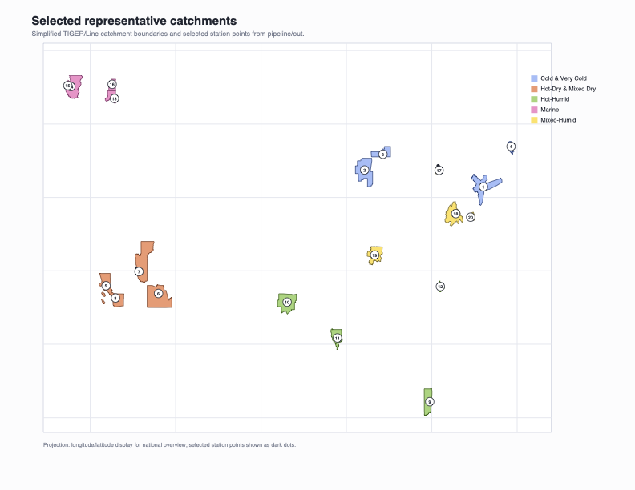
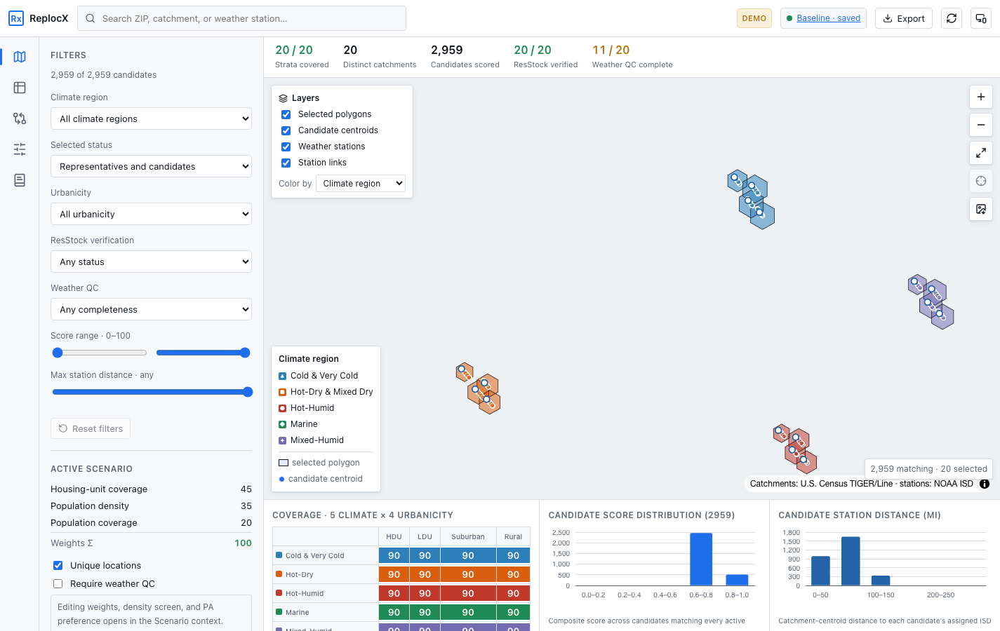
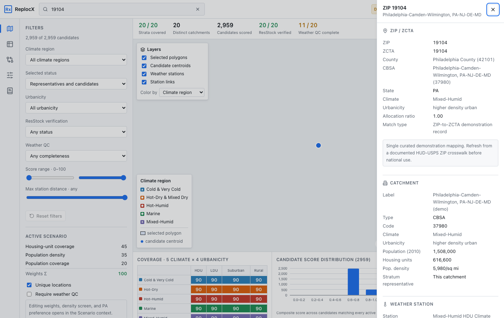
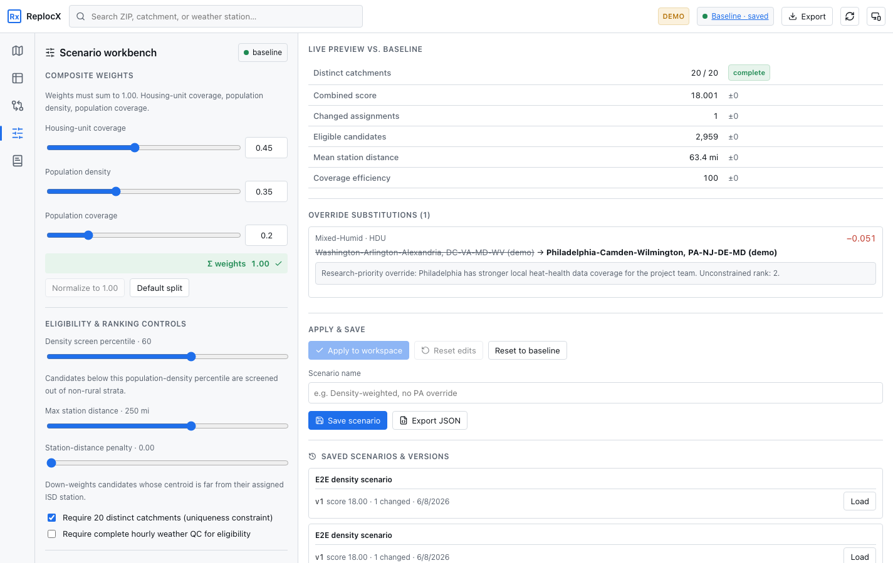
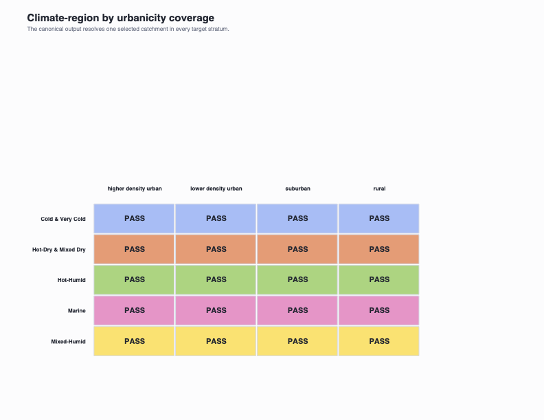
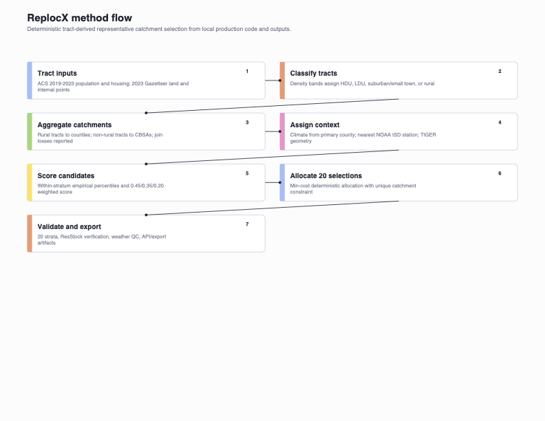
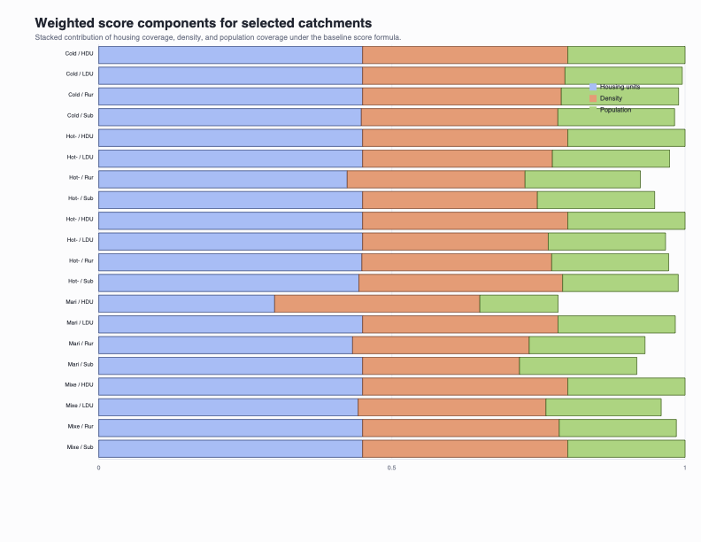
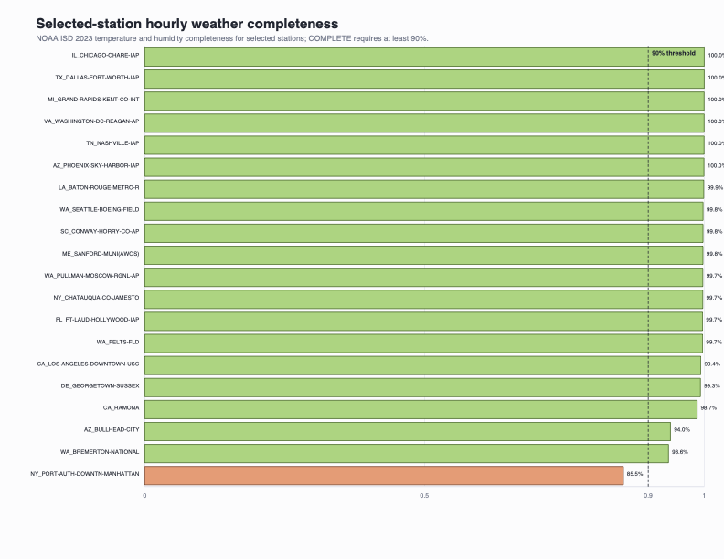

I'm a PhD computational scientist modeling indoor heat & humidity across the U.S. housing stock — and I build the production software that turns those models into decisions. Building-energy simulation × climate-health equity × shipped products.
I study how hot and humid U.S. homes get indoors, who is most exposed, and what that means for health. My toolkit spans EnergyPlus / ResStock-style building-stock simulation, hybrid physics-based and machine-learning modeling, and rigorous uncertainty analysis. What sets my work apart is that it doesn't end in a notebook — I turn research-grade methods into deployed, inspectable products. My doctoral research is funded by the NIH (1R01HL164726-01) and bridges architectural engineering and environmental public health.
I build the way the most productive engineers now build: I own the architecture, domain modeling, and system design, then direct modern AI coding tools to implement at speed — and I review, test, and harden everything myself. ReplocX wasn't conjured from a single prompt; it was decomposed into dozens of deliberate decisions — deterministic scoring, API versioning, data governance, CI/CD gates, and an end-to-end test suite. AI is the force multiplier. The judgment, the science, and the validation are mine. The payoff: research-grade methods shipped as real, inspectable products — faster than traditional workflows allow.
Translate a research problem into system boundaries, data contracts, and a buildable plan.
Drive AI coding tools to generate components fast — guided by precise specs and domain constraints.
Unit + e2e tests, type/lint gates, security headers, reproducible outputs. Nothing ships unverified.
Deploy behind health checks and release gates; validate against real data and stakeholders.
Filter by type. Click any card for the full case study, figures, and links.
A deployed decision-support app that selects representative U.S. locations for national building-stock, climate, and heat-health simulation: deterministic scoring, representative-location allocation, ZIP-code explanation, weather-QC, scenario comparison, and exports — over a ~4,019-candidate national universe resolved to 20 strata, behind a versioned /api/v1 with CI gates and a public-demo / private-data split.
Every selected location is defended through scores, strata, alternatives, and substitution reasons. The same product surface serves a safe public demo and, behind auth, real analytical data.








Indoor heat exposure, modeling methods, and the building-to-health link.
20 peer-reviewed publications total — full list on Google Scholar ↗. Research featured in The New York Times (2024).
Open to roles and collaborations in climate-tech, energy analytics, national labs, and research engineering. The fastest way to reach me: